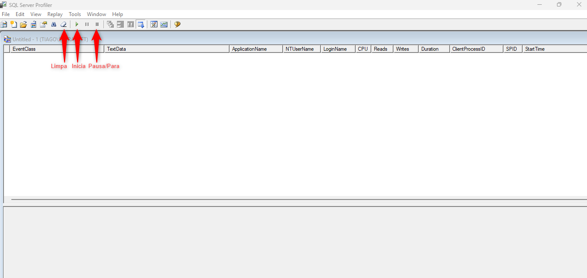
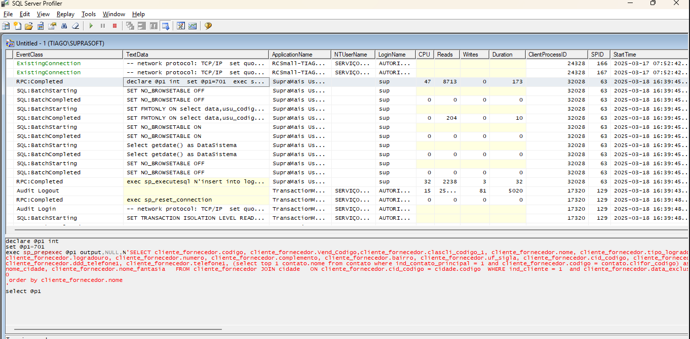

Conceito
- O que é? Ferramenta que monitora o que é feito no SQL Server quando aberta. Permite verificar as consultas que o SupraMAIS realiza no banco (ex.: descobrir o SELECT usado por um relatório).
- Onde fica? No SQL: menu Ferramentas > SQL Server Profiler.
Como usar (passo a passo)
- Abra o Profiler.
- Pausar e limpar o que estiver sendo exibido.
- Após pausado e limpo, volte ao Supra e realize o processo que precisa (ex.: gerar um relatório).
- Volte ao Profiler para analisar as linhas e identificar o SELECT utilizado.

Exemplo: para descobrir como o Supra monta um relatório, vá até a tela de filtros do relatório; antes de mandar exibir, inicie o Profiler. O resultado será exibido após o relatório finalizar no SupraMAIS.

Será necessário percorrer as linhas para identificar qual é o SELECT. Após identificar, copie e execute no SQL para validar. Obs.: pode ser necessário “tratar” o SELECT (ele vem em formato para o Supra “ler”; por exemplo, datas podem vir com aspas diferentes).
Curiosidade
Nem sempre conseguiremos todas as informações com apenas um SELECT. Em alguns casos são várias consultas e, dependendo do caso, pode não conseguir utilizar.